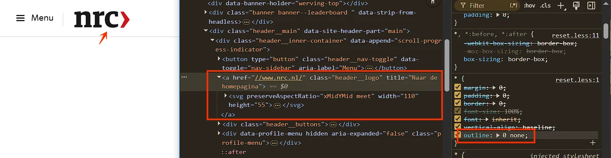
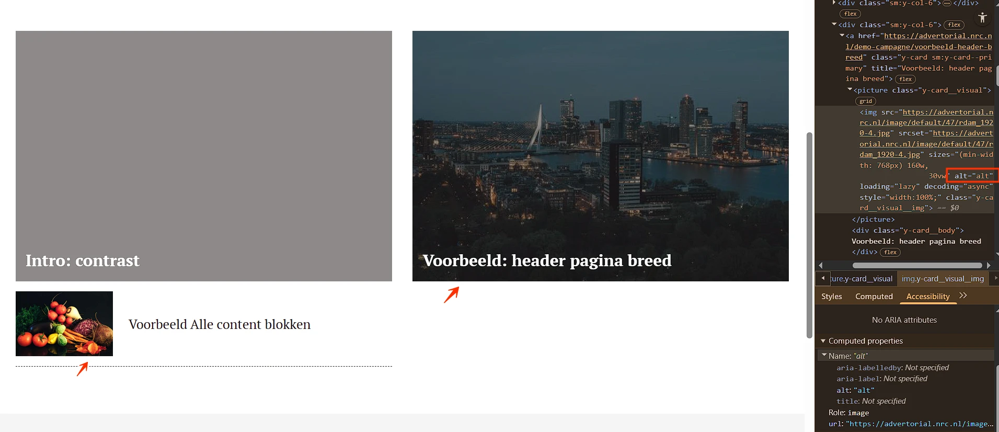
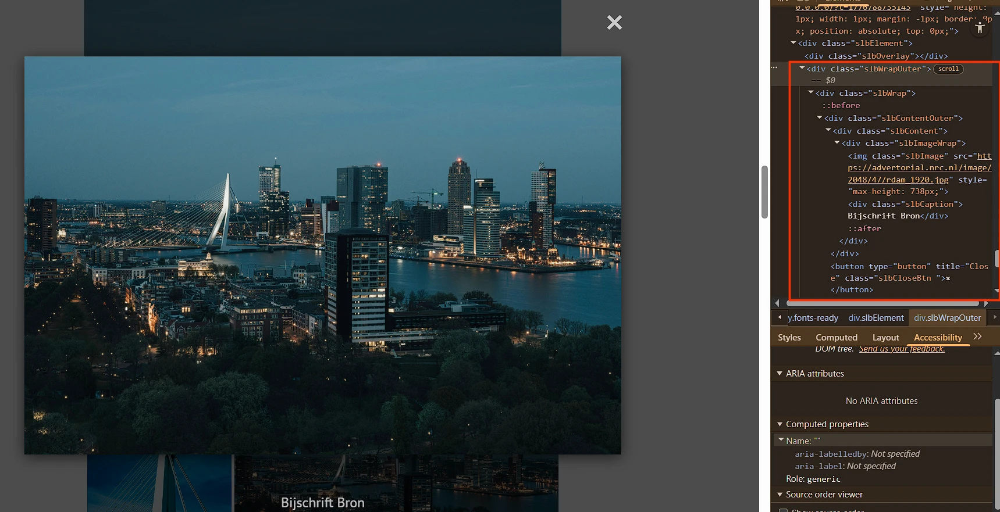
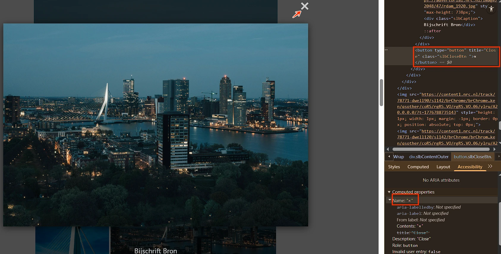
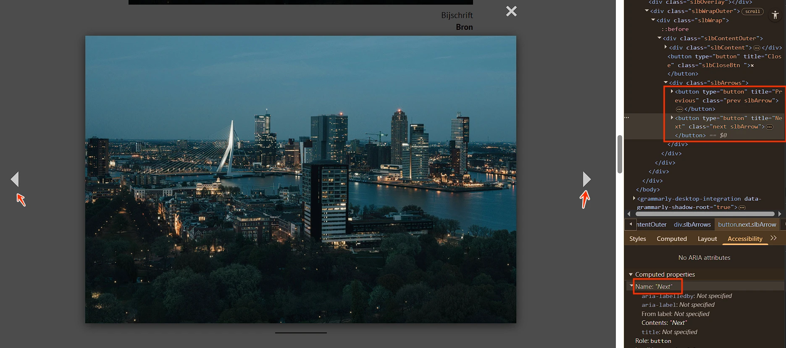
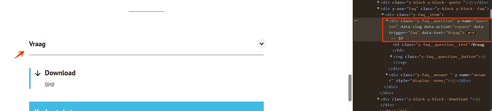
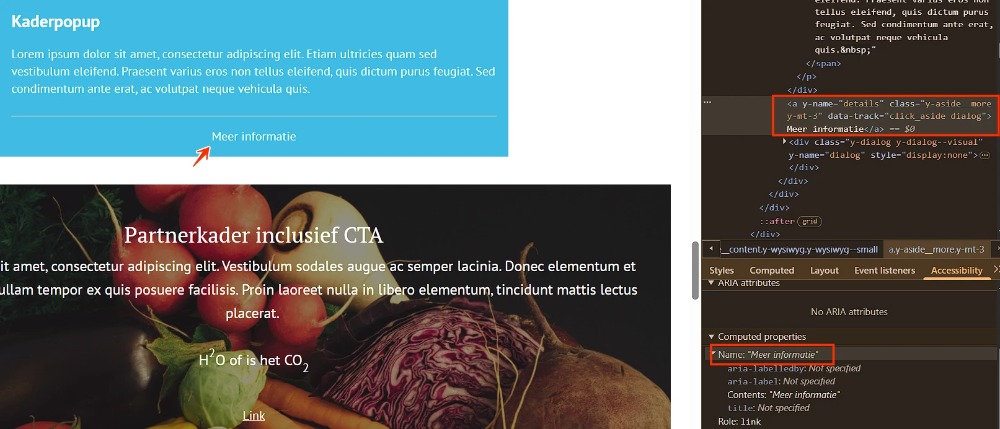

Audit digitale toegankelijkheid van website advertorial.nrc.nl/demo-campagne
Samenvatting
Wij hebben de website https://advertorial.nrc.nl/demo-campagne onderzocht in 21 april 2026. Op dit moment is een deel van de succescriteria als voldoende beoordeeld. In dit rapport lees je welke punten nog verbetering behoeven en hoe deze kunnen worden aangepakt.
Onderstaande bevindingen gelden voor alle pagina's op de website advertorial.nrc.nl.
#1 - Toetsenbordfocus is niet zichtbaar
Impact: GrootType: TechniekWCAG: 2.4.7EN: 9.2.4.7

Alle interactieve elementen — zoals knoppen en links — hebben geen zichtbare toetsenbordfocus door de CSS-eigenschap outline: 0. Zie bijvoorbeeld de link met het logo, de menuknop en de links in de header en footer.
User story
Als bezoeker die met het toetsenbord navigeert, met een schermvergroter werkt of slechtziend is, heb ik nodig dat elk interactief element een zichtbare focusindicator behoudt — outline: none of outline: 0 hoort nooit gebruikt te worden zonder een duidelijk zichtbare vervanger — want nu is de focus-outline weggehaald door CSS, heb ik geen visueel signaal waar mijn toetsenbord staat, en wordt tabben door de pagina een gokspel.
Oplossing
Verwijder de declaratie outline: none of outline: 0, of vervang deze door een duidelijk zichtbare alternatieve focusstijl. Gebruik :focus-visible om de focusindicator alleen te tonen bij toetsenbordnavigatie.
Wanneer de standaard browser-outline niet bij het ontwerp past, vervang deze dan door een eigen focusstijl — niet volledig verwijderen.
De volgende tekst is niet opgemaakt als kop: "• Advertentie •". Wanneer tekst fungeert als kop maar geen juiste opmaak heeft, verliest hij zijn semantische betekenis en wordt hij ontoegankelijk voor bezoekers die afhankelijk zijn van hulptechnologieën zoals schermlezers. Koppen zijn essentieel om de structuur van de inhoud te navigeren en te begrijpen.
Als bezoeker die de pagina scant door met een schermlezer van kop naar kop te springen, heb ik nodig dat elke tekst die eruitziet als een kop ook daadwerkelijk als kop in de code staat — omsloten door h1 tot en met h6 — want de kop-snelkoppeling van mijn schermlezer vindt alleen echte koppen, en een stuk tekst dat visueel is opgemaakt als kop maar gebruikmaakt van div, span, strong of een paragraaf is voor mij onzichtbaar als ik de pagina probeer te scannen of direct naar een sectie wil springen.
Oplossing
Markeer deze tekst met het juiste kop-element (h1 tot en met h6), passend bij de rol en hiërarchie in de inhoud.
#3 - Een decoratieve afbeelding is niet verborgen voor schermlezers
Impact: MediumType: InhoudWCAG: 1.1.1EN: 9.1.1.1

De links "Voorbeeld: header pagina breed" en "Voorbeeld Alle content blokken" bevatten decoratieve afbeeldingen met de alt-tekst "alt". Decoratieve afbeeldingen hebben geen informatieve waarde en moeten verborgen worden voor schermlezers.
Als bezoeker die de pagina hoort via een schermlezer of vertrouwt op een schone, voorspelbare leesvolgorde, heb ik nodig dat elk puur decoratief img-element voor hulptechnologie verborgen is met een leeg alt-attribuut (alt="") — want zolang een decoratie tekst meedraagt, leest mijn schermlezer die voor alsof hij ertoe doet, wordt mijn leesritme onderbroken door inhoud die ik niet nodig heb, en kan ik niet in één oogopslag zien welke meldingen informatie dragen en welke niet.
Oplossing
Dit is op meerdere manieren op te lossen:
Geef het img-element een leeg alt-attribuut: alt="".
#4 - Zichtbare linktekst staat niet in de toegankelijke naam
Impact: GrootType: TechniekWCAG: 2.5.3EN: 9.2.5.3
Onder de kop "Meerdere related artikelen" staat een link met een logo waarvan de zichtbare tekst ("corendon") niet in de toegankelijke naam ("Demo campagne") is opgenomen. Door dit verschil kan het logo (dat een link is) niet met spraakbesturing geactiveerd worden. Wanneer de zichtbare tekst afwijkt van de toegankelijke naam, werken spraakcommando's op basis van de zichtbare tekst niet.
Hetzelfde probleem komt hieronder voor onder de kop "Meer van Demo campagne".
Als bezoeker die de pagina met spraakbesturing bedient, heb ik nodig dat de toegankelijke naam van elke link de woorden bevat die ik op het scherm zie — óók bij links die rond een afbeelding zijn gebouwd — want mijn spraakcommando gebruikt de zichtbare tekst ("corendon"), en als die woorden niet in de toegankelijke naam van de link of van de afbeelding staan, kan mijn commando de link niet volgen.
Oplossing
Neem de zichtbare tekst op in de toegankelijke naam, bij voorkeur aan het begin. Pas in dit geval de alt-tekst aan zodat deze de zichtbare tekst bevat.
Boven de kop "Meer van Demo campagne" staat een groep social media-links. De SVG-iconen in deze links zijn via role="img" als afbeelding beschikbaar gesteld, maar hebben geen tekstalternatief.
In deze context zijn de iconen onderdeel van links die al een toegankelijke naam hebben. De SVG's als aparte afbeelding beschikbaar stellen is daardoor overbodig en kan leiden tot dubbele of verwarrende meldingen voor schermlezergebruikers.
Als schermlezergebruiker die door de groep social media-links navigeer, heb ik nodig dat decoratieve iconen genegeerd worden door hulptechnologie wanneer de links zelf al een duidelijke toegankelijke naam hebben — zo hoor ik alleen de nuttige linkinformatie en krijg ik geen overbodige of verwarrende afbeeldingsmeldingen.
Oplossing
Verwijder in dit geval role="img", omdat de links al een toegankelijke naam bevatten.
Op deze pagina wordt een kop van niveau 2 direct gevolgd door een andere kop van een hoger niveau. Zie "Chapeau" en "Voorbeeld: header pagina breed".
Dit wijst op een onjuiste koppenstructuur. Koppen horen een logische hiërarchie te volgen. Een kop mag niet direct gevolgd worden door een andere kop op hetzelfde of een hoger niveau zonder tussenliggende inhoud.
Als bezoeker die de pagina doorkruist door met een schermlezer van kop naar kop te springen, heb ik nodig dat elke kop op de pagina zijn eigen inhoud aankondigt — en niet direct wordt gevolgd door een andere kop op hetzelfde of hoger niveau zonder tussenliggende inhoud — want opeenvolgende koppen vertellen me dat een sectie begint en vervolgens meteen weer dat hij begint, mijn mentale plattegrond van de pagina valt uiteen, en één van de twee koppen wordt duidelijk misbruikt voor visuele opmaak in plaats van structuur.
Oplossing
Zorg dat koppen logisch genest zijn en de structuur van de inhoud weerspiegelen. De beste oplossing is het h2-element met de tekst "Chapeau" te verwijderen.
Onder de kop "Onderkop" staat een afbeelding. Het tekstalternatief van de afbeelding ("Dit is het bijschrift") dupliceert de tekst onder de afbeelding in de figcaption.
Omdat deze afbeeldingen geen extra informatie bieden naast wat al op de pagina staat, kunnen ze als decoratief worden beschouwd.
Hetzelfde probleem komt hieronder voor, bij de kop "Partnerkader inclusief CTA".
User story
Als bezoeker die de pagina via een schermlezer hoort, heb ik nodig dat de alt-tekst van een informatieve afbeelding leeg is wanneer de zichtbare tekst ernaast al hetzelfde zegt — want als de afbeelding en de omliggende tekst dezelfde woorden tonen, leest mijn schermlezer dezelfde zin twee keer, wordt mijn leesritme doorbroken door de herhaling, en verlies ik tijd met de vraag of ik de tweede keer iets heb gemist.
Oplossing
Geef deze afbeelding een leeg alt-attribuut (alt="") om dubbele informatie voor schermlezergebruikers te voorkomen.
#8 - Afbeelding opent op volledig scherm, linkbestemming onbekend
Impact: MediumType: InhoudWCAG: 2.4.4EN: 9.2.4.4
Op deze pagina werken de afbeeldingen onder de kop "Koptekst" als links die een weergave op volledig scherm openen wanneer je erop klikt. Deze functionaliteit is echter niet in de HTML vastgelegd, waardoor deze ontoegankelijk is voor blinde gebruikers. Zij kunnen niet waarnemen dat de afbeeldingen links zijn, of dat ze een weergave op volledig scherm openen.
Let er bovendien op dat links een beschrijvende tekst moeten hebben, en dat er geen twee of meer links mogen zijn met dezelfde toegankelijke naam.
User story
Als bezoeker die links volgt met een schermlezer, met spraakbesturing of met afbeeldingen uit, heb ik nodig dat elke afbeelding die linkt naar een eigen weergave op volledig scherm dat doel ook in de code kenbaar maakt — via een alt-tekst als "Afbeelding op volledig scherm bekijken" of een aria-label op de omsluitende a-tag — want nu ziet de link eruit als elke andere afbeelding, kan mijn schermlezer niet onderscheiden of er "alleen visueel" gedrag volgt zoals "opent op volledig scherm" of dat het een gewone link is, en volg ik hem zonder te weten wat er gaat gebeuren.
Oplossing
Geef informatie over het gedrag van de link. Dat kan op twee manieren:
Visueel verborgen tekst toevoegen: neem beschrijvende tekst op in het link-element, bijvoorbeeld "(opent op volledig scherm)", en verberg deze visueel met CSS (bijvoorbeeld via display: none; of een .sr-only-klasse).
aria-haspopup="dialog" gebruiken: voeg het attribuut aria-haspopup="dialog" toe aan het link-element om aan te geven dat er een weergave op volledig scherm opent, die als een soort dialoogvenster beschouwd kan worden.
#9 - Dialoogvenster heeft geen role="dialog" en geen naam
Impact: GrootType: TechniekWCAG: 4.1.2EN: 9.4.1.2

Op deze pagina werken de afbeeldingen onder de kop "Koptekst" als links die een weergave op volledig scherm openen in een modaal dialoogvenster. Dit dialoogvenster heeft geen juiste rol en geen toegankelijke naam.
Hierdoor kunnen schermlezers het element niet als dialoogvenster herkennen en kunnen ze het doel of de inhoud ervan niet doorgeven aan de gebruiker.
User story
Als bezoeker die dialoogvensters met een schermlezer bedient, heb ik nodig dat elk dialoogvenster zowelrole="dialog" heeft (zodat mijn schermlezer het als dialoogvenster aankondigt) als een toegankelijke naam (via aria-label of aria-labelledby) — want nu ontbreekt beide, heeft mijn schermlezer geen idee dat er een overlay is verschenen of waarvoor die bedoeld is, en kan ik niet vaststellen dat ik überhaupt in een dialoogvenster zit.
Oplossing
Dit is op te lossen door role="dialog" en aria-label="Beschrijving van de inhoud" toe te voegen aan het dialoogvenster.
#10 - Focusvolgorde is niet logisch wanneer een dialoogvenster openstaat
Impact: GrootType: TechniekWCAG: 2.4.3EN: 9.2.4.3
Op deze pagina werken de afbeeldingen onder de kop "Koptekst" als links die een weergave op volledig scherm openen in een modaal dialoogvenster. De toetsenbordfocus wordt echter niet automatisch in het dialoogvenster geplaatst wanneer het opent.
User story
Als bezoeker die dialoogvensters met het toetsenbord of met een schermlezer bedient, heb ik nodig dat de focus in elk modaal dialoogvenster terechtkomt zodra het opent — meestal op het eerste interactieve element of op een kop in het dialoogvenster — want nu druk ik op de trigger, verschijnt het dialoogvenster, maar beweegt mijn focus niet mee, loopt mijn volgende tab door de onderliggende pagina in plaats van door het dialoogvenster dat ik zojuist heb geopend, en kan ik niet merken dat het dialoogvenster überhaupt met mijn toetsenbord te maken heeft.
Oplossing
Beheer de focusvolgorde zo dat de toetsenbordfocus direct op een logisch element binnen het nieuw geopende modale dialoogvenster wordt geplaatst.
#11 - Knopnaam beschrijft niet wat de knop doet
Impact: GrootType: TechniekWCAG: 2.4.6EN: 9.2.4.6

Op deze pagina werken de afbeeldingen onder de kop "Koptekst" als links die een weergave op volledig scherm openen in een modaal dialoogvenster. In dit dialoogvenster staat een sluitknop, maar de toegankelijke naam daarvan is "x". Dat beschrijft de functie niet goed. Hierdoor is voor blinde gebruikers en gebruikers van schermlezers moeilijk te begrijpen waar de knop voor dient. De toegankelijke naam moet duidelijk en bondig aangeven welke actie de knop uitvoert.
User story
Als bezoeker die knoppen activeert met een schermlezer, met spraakbesturing of met afbeeldingen uit, heb ik nodig dat de toegankelijke naam van elke knop beschrijft wat er gebeurt als ik hem activeer — niet zijn visuele vorm, zijn bestandsnaam of een label dat niets met zijn functie te maken heeft — want nu komt de aangekondigde naam niet overeen met de echte actie, en geeft mijn schermlezer een misleidend beeld van wat ik op het punt sta te doen.
Oplossing
Pas de toegankelijke naam aan (bijvoorbeeld met aria-label) zodat deze de functie van de knop juist weergeeft ("dialoogvenster sluiten").
Op deze pagina werken de afbeeldingen onder de kop "Koptekst" als links die een weergave op volledig scherm openen in een modaal dialoogvenster. In dit dialoogvenster staan knoppen met pijliconen. De toegankelijke namen van deze knoppen ("Next" en "Previous") beschrijven hun functie onvoldoende.
User story
Als schermlezergebruiker die door een reeks afbeeldingen navigeert, heb ik nodig dat de navigatieknoppen duidelijk maken dat ze tussen afbeeldingen wisselen — zodat ik begrijp wat er gebeurt als ik ze activeer. Labels als "Next" en "Previous" zonder context zijn dubbelzinnig en maken de navigatie minder duidelijk.
Oplossing
Voeg het woord "afbeelding" toe via visueel verborgen tekst of via aria-label (bijvoorbeeld "Volgende afbeelding", "Vorige afbeelding"). Dat biedt de ontbrekende context en verbetert de toegankelijkheid.
#13 - Deel van de inhoud staat in een andere taal, maar de taalcode ontbreekt
Impact: AdviesType: InhoudWCAG: 3.1.2EN: 9.3.1.2

Op deze pagina werken de afbeeldingen onder de kop "Koptekst" als links die een weergave op volledig scherm openen in een modaal dialoogvenster. In dit dialoogvenster staan knoppen met pijliconen. De toegankelijke namen van deze knoppen zijn in het Engels ("Next" en "Previous") zonder taalcode, terwijl de website in het Nederlands is. Hierdoor gebruiken schermlezers de uitspraakregels van de hoofdtaal, met mogelijk verkeerd uitgesproken anderstalige tekst als gevolg.
User story
Als bezoeker die de pagina via een schermlezer leest, heb ik nodig dat elke zin die in een andere taal staat dan de hoofdtaal van de pagina zijn eigen lang-attribuut meekrijgt — want nu staat een Engelse tekst in een Nederlandse pagina zonder taalwissel, leest mijn schermlezer hem met Nederlandse uitspraakregels, en is het resultaat onverstaanbaar.
Oplossing
Vertaal deze teksten naar het Nederlands, of voeg een lang-attribuut met de juiste taalcode toe aan het element met de anderstalige tekst. Voor Engelse tekst wordt dat bijvoorbeeld lang="en".
#14 - Rol en status van accordeonknop ontbreken
Impact: GrootType: TechniekWCAG: 4.1.2EN: 9.4.1.2

Boven de kop "Kader tekst", in een sectie met verborgen inhoud "Vraag", heeft het element dat de verborgen inhoud opent en sluit geen knoprol. Schermlezergebruikers kunnen het element daardoor niet als interactief herkennen. Zonder de juiste rol kondigt hulptechnologie het element niet aan als knop, waardoor de accordeon onbruikbaar wordt voor deze gebruikers.
Bovendien is de open of gesloten staat visueel wel zichtbaar, maar wordt deze niet programmatisch doorgegeven aan schermlezers.
User story
Als bezoeker die accordeons met een schermlezer of het toetsenbord bedient, heb ik nodig dat elke accordeon-trigger is opgemaakt als een echte knop — meestal een button-element in een kop — want nu is de trigger een ander element, kondigt mijn schermlezer hem niet aan als knop, kan mijn toetsenbord hem niet activeren zoals het verwacht, en wordt de accordeon onzichtbaar voor hulptechnologie.
Oplossing
Gebruik een kop-element met een button-element erin, bijvoorbeeld: <h2><button>Vraag</button></h2>. Zo krijgt het bedien-element de juiste knoprol en wordt het door schermlezers als interactief aangekondigd.
Geef de staat op één van deze manieren door:
Voeg het attribuut aria-expanded toe aan het element dat het paneel opent/sluit. De waarde is true wanneer het paneel openstaat en false wanneer het gesloten is. Deze waarde moet dynamisch meewijzigen wanneer de staat verandert.
Neem visueel verborgen tekst op die de staat aangeeft (bijvoorbeeld "(open)" of "(gesloten)") en pas die tekst dynamisch aan wanneer de staat verandert. Deze tekst wordt door schermlezers gelezen maar niet visueel getoond.
#15 - Accordeon is niet te bedienen met het toetsenbord
Impact: GrootType: TechniekWCAG: 2.1.1EN: 9.2.1.1
Boven de kop "Kader tekst" is de sectie met verborgen inhoud "Vraag" niet bereikbaar met het toetsenbord. Gebruikers die uitsluitend met het toetsenbord navigeren moeten alle interactieve elementen kunnen bedienen: links, knoppen, formulieren, dropdowns, tabs, sliders en accordeons. De accordeon moet volledig met het toetsenbord bedienbaar zijn. Meestal betekent dat navigeren met de pijltjestoetsen, openen/sluiten met Enter of spatiebalk, en de juiste ARIA-attributen om de status aan hulptechnologie door te geven.
Als bezoeker die navigeert met het toetsenbord, een schermlezer, spraakbesturing of een switch-apparaat, heb ik nodig dat elke accordeon — net als elk ander aanklikbaar onderdeel (links, knoppen, formulieren, dropdowns, tabs, sliders) — zich met Enter of spatie vanaf het toetsenbord laat openen en sluiten — want nu reageert de accordeon alleen op een muisklik, kan mijn toetsenbord de verborgen inhoud niet openen, en is de inhoud eronder onbereikbaar voor iedereen die geen muis gebruikt.
Oplossing
Zorg dat alles wat aanklikbaar is, ook met het toetsenbord werkt.
#16 - Linktekst is niet duidelijk genoeg (download)
Impact: MediumType: InhoudWCAG: 2.4.4EN: 9.2.4.4
Boven de kop "Kader tekst" staat een downloadlink. De toegankelijke naam "Download (jpg)" beschrijft niet welke afbeelding precies wordt gedownload.
User story
Als bezoeker die links volgt met een schermlezer, spraakbesturing, met cognitieve beperkingen, of die een pagina scant door van link naar link te springen, heb ik nodig dat de tekst van elke link op zichzelf de bestemming beschrijft — en niet generieke formuleringen als "Download (jpg)", die buiten context niets zeggen — want de linkenlijst van mijn schermlezer toont alleen de linktekst, mijn spraakcommando heeft een unieke naam nodig om op te richten, en een lijst vol "Download (jpg)"-links vertelt me niets over welke ik moet volgen.
Oplossing
Zorg dat de linktekst duidelijk aangeeft waar de link naartoe leidt. Als de context visueel duidelijk is (bijvoorbeeld binnen een specifieke sectie), kan je de vage tekst aanvullen met visueel verborgen tekst die meer context biedt. Bijvoorbeeld: "Download (jpg) – afbeelding XX".
<ahref="">Download (jpg) <spanclass="sr-only"> afbeelding XX </span></a>
#17 - Contrastverhouding tussen tekst en achtergrond is onvoldoende
Er staat witte tekst op een lichtblauwe achtergrond (#40BBE4), bijvoorbeeld "Kader tekst" en "Meer informatie". De contrastverhouding is te laag: 2,2:1.
Voor grote (>24px) en vetgedrukte tekst moet de contrastverhouding ten minste 3:1 zijn; voor gewone tekst ten minste 4,5:1.
User story
Als bezoeker met een visuele beperking, leeftijdsgebonden contrastverlies of een scherm in fel zonlicht, heb ik voldoende contrast nodig tussen tekst en achtergrond — want de huidige kleuren liggen onder de vereiste drempel, waardoor de broodtekst lastig te lezen is of ik hem helemaal oversla.
Oplossing
Zorg dat de contrastverhouding voor grote (>24px) en vetgedrukte tekst ten minste 3:1 is, en voor gewone tekst ten minste 4,5:1.
#18 - Linktekst is niet duidelijk genoeg (Meer informatie)
Impact: MediumType: InhoudWCAG: 2.4.4EN: 9.2.4.4

Onder de kop "Kaderpopup" staat een link met de niet-informatieve tekst "Meer informatie". Deze tekst beschrijft de bestemming onvoldoende en is vooral voor gebruikers met cognitieve beperkingen en schermlezergebruikers onduidelijk. Vage linkteksten als "Meer informatie" of "klik hier" moeten worden vermeden.
Hetzelfde probleem komt hieronder voor bij de link "Link".
User story
Als bezoeker die links volgt met een schermlezer, spraakbesturing, met cognitieve beperkingen, of die een pagina scant door van link naar link te springen, heb ik nodig dat de tekst van elke link op zichzelf de bestemming beschrijft — en niet generieke formuleringen als "Meer informatie", die buiten context niets zeggen — want de linkenlijst van mijn schermlezer toont alleen de linktekst, mijn spraakcommando heeft een unieke naam nodig om op te richten, en een lijst vol "Meer informatie"-links vertelt me niets over welke ik moet volgen.
Oplossing
Zorg dat de linktekst duidelijk aangeeft waar de link naartoe leidt. Als de context visueel duidelijk is (bijvoorbeeld binnen een specifieke sectie), kan je de vage tekst aanvullen met visueel verborgen tekst die meer context biedt. Bijvoorbeeld: "Meer informatie (over het project)".
<ahref="">Meer informatie <spanclass="sr-only"> (over het project) </span></a>
Over dit onderzoek
Leeswijzer
Onze rapporten zijn anders. Bij het bespreken van de gevonden problemen volgen wij niet de structuur van de norm, maar die van jouw website of app. Hierdoor kun je gewoon per pagina of scherm aan de slag gaan. Wel zo makkelijk! Je vindt verderop een overzicht van alle pagina’s met problemen.
We geven je bij elk gevonden issue een paar voorbeelden, maar niet een complete lijst. Controleer zelf of het probleem ook nog op andere plekken voorkomt. Zie het rapport als een leidraad.
Gebruikte norm
Dit onderzoek laat zien in hoeverre de website op dit moment voldoet aan WCAG 2.2, niveau A en AA. WCAG staat voor Web Content Accessibility Guidelines. Dit is de internationale norm voor digitale toegankelijkheid. De Europese norm EN 301 549 bevat alle eisen van WCAG op niveau A en AA.
In dit rapport hebben we korte beschrijvingen van de succescriteria uit de norm opgenomen, met een algemene uitleg erbij. Wil je ze helemaal lezen? Bekijk dan de documentatie van WCAG.
Gebruikte onderzoeksmethode
We gebruiken de onderzoeksmethode WCAG-EM van het W3C. Het proces ziet er als volgt uit:
vaststellen wat binnen en buiten scope valt
vaststellen welke technologieën zijn gebruikt
steekproef (sample) samenstellen
steekproef onderzoeken
gevonden issues beschrijven
Het grootste deel van het onderzoek doen we met de hand. Voor een deel van de toegankelijkheidseisen gebruiken we automatische tools als ondersteuning, zoals axe-core en Chrome Developer Tools.
Belangrijk om te weten
Dit rapport helpt je om de toegankelijkheid van je website te verbeteren. Maar let op: het is geen definitieve, volledige lijst van alle aanwezige toegankelijkheidsproblemen. Dat zit zo:
Het is een steekproef
Ten eerste is het onderzoek gebaseerd op een steekproef. Die is op een betrouwbare manier genomen, en de meeste problemen zullen daardoor zeker aan het licht komen. Toch kan een probleem net buiten de steekproef vallen. Bij een volgend onderzoek kan het wel ontdekt worden.
Op basis van falsificatie
We beoordelen vanuit het principe van falsificatie. Dat houdt in dat we proberen te bewijzen dat iets niet waar is, in plaats van te bevestigen dat het klopt. ‘Voldoet’ betekent daarom dat we geen reden hebben gevonden om een punt af te keuren. Maar als we later wél een reden vinden, kan het alsnog worden afgekeurd.
Voortschrijdend inzicht
Het komt voor dat de beoordeling van een succescriterium op detailniveau verandert. De norm beschrijft namelijk niet élk mogelijk scenario. Samen met andere onderzoeksbureaus overleggen we hoe we met bepaalde situaties omgaan. Zo kan iets dat nu wordt afgekeurd, soms bij een volgend onderzoek worden goedgekeurd en andersom.
Oplossen leidt tot nieuw probleem
Ten slotte kan het gebeuren dat bij het oplossen van een probleem onbedoeld een nieuw toegankelijkheidsprobleem ontstaat. Dat komt dan bij een volgend onderzoek pas naar voren.
Hoe werkt dit rapport?
Bevindingen bekijken en filteren
Alle gevonden toegankelijkheidsproblemen staan onder Gevonden problemen. Je kunt de bevindingen filteren op:
Impact (Groot, Medium, Klein, Advies) — hoe ernstig is het probleem voor de gebruiker?
Type (Content, Techniek) — moet de inhoud of de techniek worden aangepast?
Status (Open, Opgelost) — welke problemen zijn al verholpen?
Voortgang bijhouden
Je kunt je voortgang op twee manieren bijhouden:
CSV-export — exporteer alle bevindingen als CSV-bestand en laad het in een (online) spreadsheet om met je team samen te werken.
Jira-export — exporteer alle bevindingen als Jira-compatibel CSV-bestand. Importeer het via Jira > Issues > Import issues from CSV. Bevindingen worden aangemaakt als bugs met prioriteit op basis van impact.
Registreer in de browser — activeer deze optie om per bevinding bij te houden of het is opgelost. Je voortgang wordt opgeslagen in je browser. Niemand anders kan je resultaat zien. Let op: de voortgang is gekoppeld aan je browser. Als je een andere browser of een ander apparaat gebruikt, begint de telling opnieuw.
Plan van aanpak — download een geprioriteerd plan van aanpak om de gevonden problemen stap voor stap op te lossen. Dit is beschikbaar bij audits vanaf maart 2026.
Link naar een specifieke bevinding delen
Bij elke bevinding verschijnt een link-icoon wanneer je er met de muis overheen gaat. Klik op dit icoon om de directe link naar die bevinding te kopiëren. Je kunt deze link plakken in een e-mail of chatbericht, bijvoorbeeld om een vraag te stellen aan Proper Access over een specifiek punt.